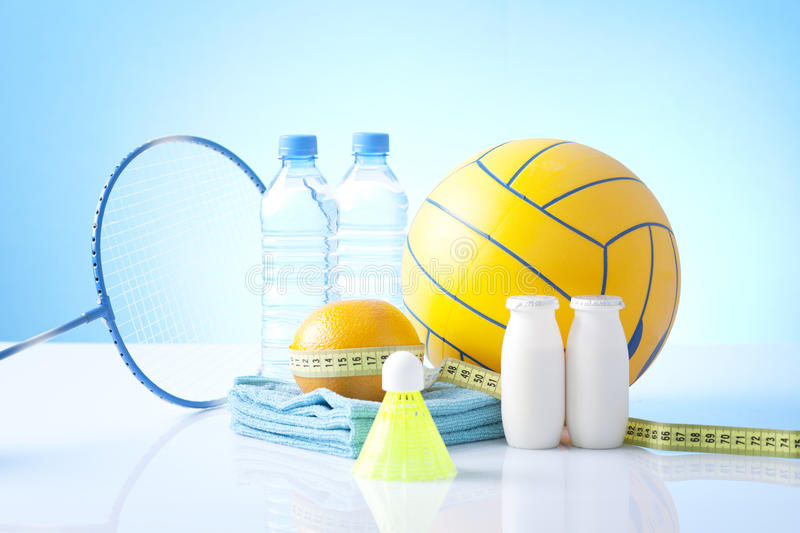

<!DOCTYPE html>
<html   lang="en">
    <head> 
            <meta charset="UTF-8"> 
            <meta http-equiv="X-UA-Compatible" content="ie=edge"> 
            <meta name="viweport" content="widht=device-with,initial-scale=1.0">
            <title>Spot Zone </title> 
</head> 
</html>


<header>
    <h1>Sport Control Club</h1>
    <nav>
            <ul>
                <li><a href="https://www.hardbody.com.co/noticias/como-realizar-una-buena-rutina-de-ejercicios" target="_BLANK">Llevame a Hardbody</a></li></li>
                <li><a href="registro.html">Registrarme</a></li>
                <li>Cuidame</li> 
                <li><a href="https://niketeam.nike.com/en/en_US/nts/" target="_BLANK">Nike Team</a></li></li>

            
                
                <ul>
                    <nav>
                        <hr>
                    </header>

                    <main>
                        
                        <h4>SPORT ZONE DREAM</h4>
                        <h6>ESTAMOS PARA MEJORAR TU VIDA</h6>

                        <h2>Intenta y falla, pero nunca falles en intentarlo</h2>

                        <h3>DEFINICIONES</h3>
                        <P> 
                            La práctica de deporte es uno de los pilares para una vida saludable a cualquier edad. Ya sea salir a correr, dar largos paseos, jugar un partido de fútbol con los amigos o hacer yoga, practicar algún deporte te hará estar más saludable, además de permanecer más feliz y con más energía gracias a los beneficios de la actividad física. Por eso, en este artículo te vamos a explicar la importancia del deporte para una vida saludable.

   <h4>¿Cuales son los principales beneficios de las actividades fisicas?</h4>

La Organización Mundial de la Salud (OMS) describe la actividad física como cualquier movimiento corporal producido por los músculos esqueléticos que exija gasto de energía. La OMS nos explica que la falta de actividad física es el cuarto factor de riesgo de mortalidad a nivel mundial, además de la principal causa de un alto porcentaje de los cánceres de mama y colon, diabetes y cardiopatías.

La importancia del deporte
El deporte es una excelente forma de pasarlo bien y de conseguir objetivos, como el desarrollo muscular, la pérdida de peso o la reducción de grasas. Además, la actividad física también beneficia la regulación hormonal y el refuerzo del sistema inmunológico y contribuye  a un adecuado descanso y a reducir la fatiga.
Los beneficios del deporte no son solo físicos, sino que también afectan a la salud mental, pues previene la aparición de la depresión y el estrés, además de que mejora la autoestima e, incluso, las relaciones sociales cuando se practican deportes de equipo. En definitiva, ¡te hace sentir bien!, ¡de ahí la importancia del deporte!

                            <h4>En la vida y el deporte, ser optimista marca la diferencia, porque te ayuda a superar los momentos más difíciles.</h4>

<p>




<audio src="audio/Adagio For Strings.mp3" controls></audio>

<video src="video/Motivación deportiva _ NO PAREN (versión español).mp4" controls></video>

</main>


<footer>
<p>&#9997;Sebastian Castro Andrade</p>
<p>&#9990; 3043257191</p>
    <p>&#9992;Medellin-2021</p>


   

</footer>

    
</body>
</html>
